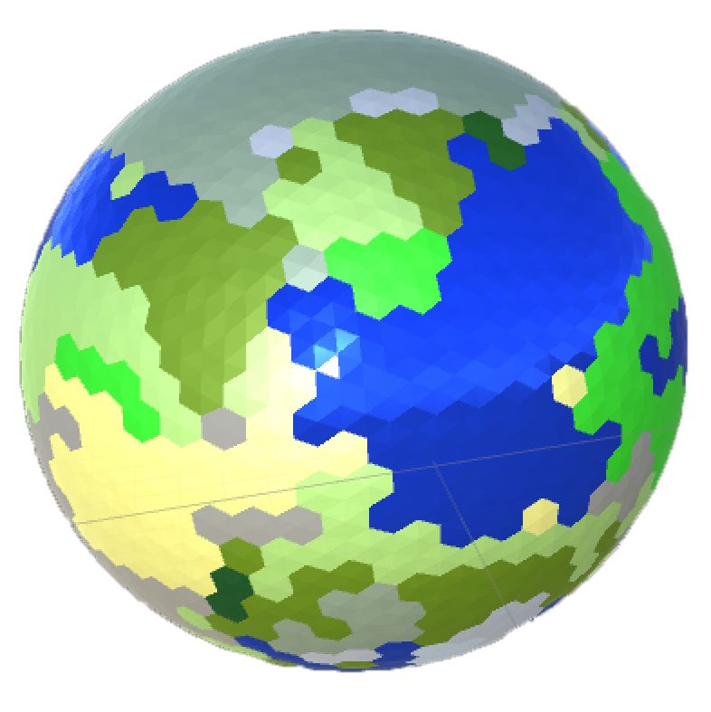
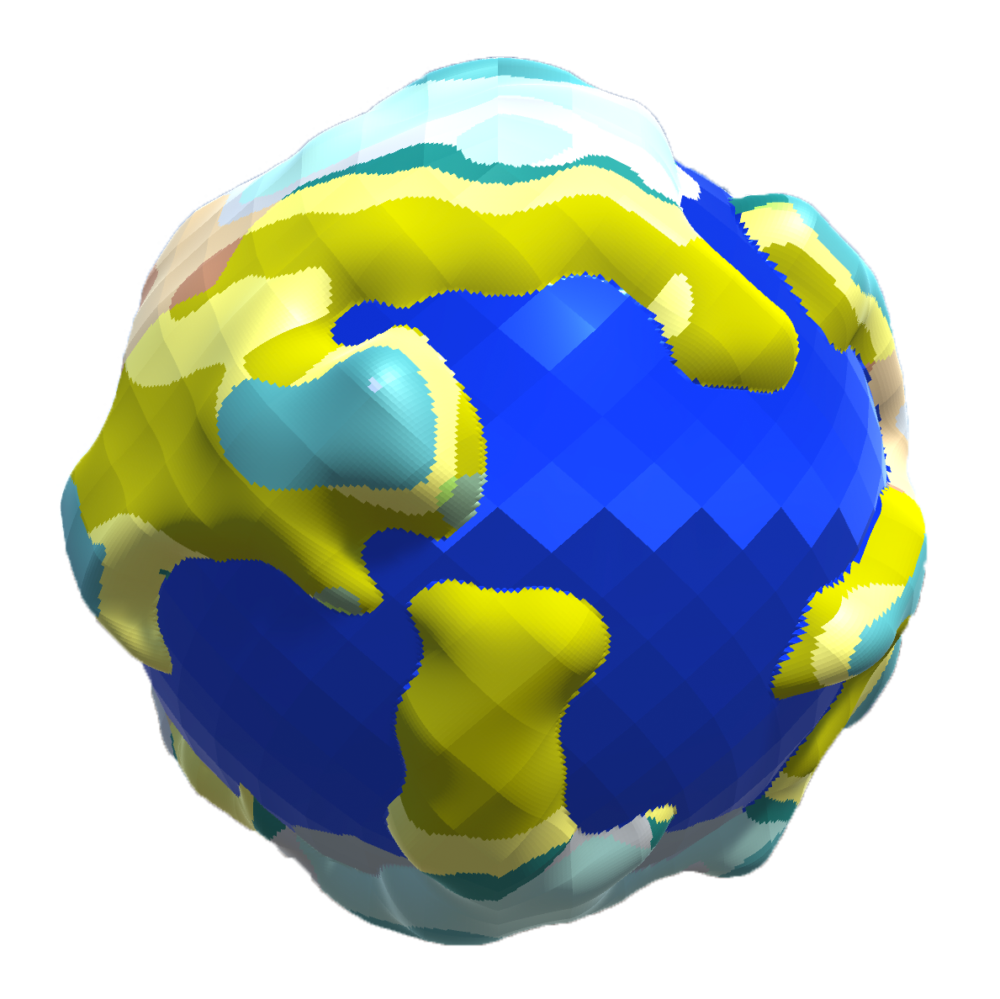

Hello World
Posted on Fri 27 January 2017 in devblog
My Story
As with any good introduction into new territory, this story starts here at hello world. And I'll build from there.
My story... well, that's not all that interesting, and is probably a pretty familiar one. Just a guy with a dream to get into game development. A dream that I have been carrying a long time, but have only recently made any attempts to actually fulfill. From the time I was very young (and I'm no where near that time, btw) this has been my dream. I trained for it throughout school, but life would lead me down a different path.
That path was network security to be exact, and that continues to be my real job. And while that real job pays the bills and is truly challenging and rewarding in its own way, I have continued to think of my dream way back in high school. Will it ever be realized? Well, sometimes life throws you a curve and you get to re-evaluate and re-prioritize. A relocation from Minnesota to California and a new job (still in network security) was apparently the wake-up call that I needed. If you have a dream, there's no better day than today to make a step towards realizing it.
And that's exactly what I've been doing for the past year or so. Taking small steps towards that dream. And that's what I'm hoping to capture here... some of those small steps towards game development.
Purpose
So, yes, this will be yet another game developer blog. There's tons of them out there, so what am I planning on doing that will make this any different? Honestly, nothing. My intent isn't to be flashy or new, but to simply document some of my experiences as a newcomer to game development. I plan to share some of the struggles I've had, including how I've overcome them. Tips, tricks, ideas and even failures are all fair game.
Throughout my learning experience, I've googled this and borrowed that. I've leaned heavily on those that have come before me and my sincere hope is that someone with similar interests and experience may stumble upon one of my articles and it may help them.
My Big Idea
I think every gamedev has one, right? That pet project that you've spent countless sleepless nights thinking about and even more time tinkering with. "Wouldn't it be cool if..."
Well, my idea really didn't start out as very original at all. Kinda just wanted to pick a project that I could learn some gamedev fundamentals and try out Unity on. Naively, I decided that it would be cool to make my own port of Terraria. On the surface, it seems like a pretty simple game, right? But of course I want to include some of my own changes and improvements along the way, including:
- Make it 3D like MineCraft, but with smooth voxels because that sounds easy, right?
- Use a planet-based world, instead of fixed size map or infinite terrain to make the world more realistic. I hated running into the end of the map in Terraria...
- Make world generation more realistic by using real-world-like features like plate tectonics, air currents, etc. to derive regional biomes.
- Lots of other "little" ideas and features...
What could possibly go wrong with this plan? Especially considering that I haven't worked on any of this stuff before. Network and security programming don't necessarily share a lot of common ground with voxel engines, terrain modeling, AI algorithms or any of the stuff that I would have to learn to make this project a reality. But so what? If things are difficult, I can learn. If things go wrong, I can adjust. I really don't have a timeline and my major goal is to learn and improve my skills. Yes, eventually I would like to release something, but I am realizing that that something may not be this project. Or maybe I will just reuse pieces of this project for other games.
So... my plan is to continue on. I'm going to make an attempt at sharing some of the lessons I've learned over the past year and continue to post as I make discoveries moving forward.
Sneak Peak
I had some help in getting started with planet generation. My next post will cover where I started, using a hex grid layout across the planet: 
To where I currently am, using a quad-based grid: 
To where I will need to go...